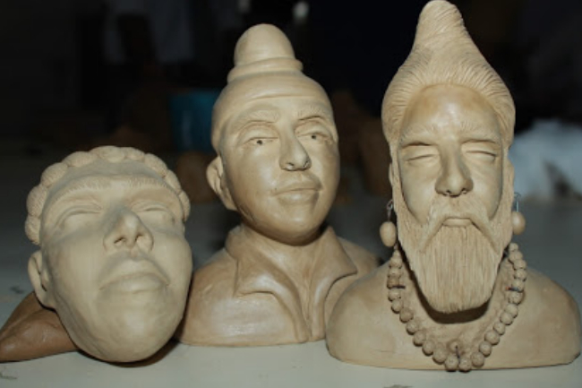
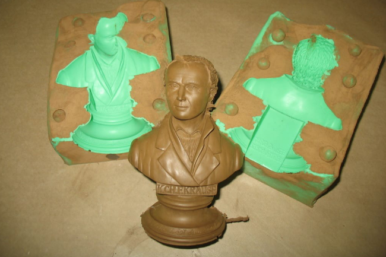
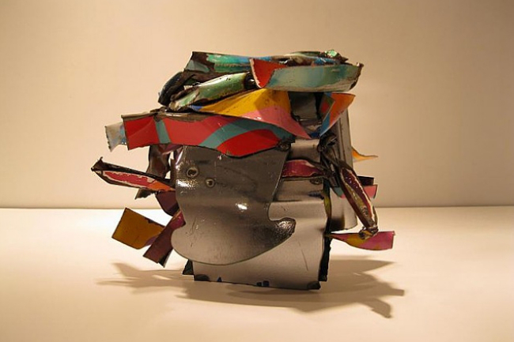
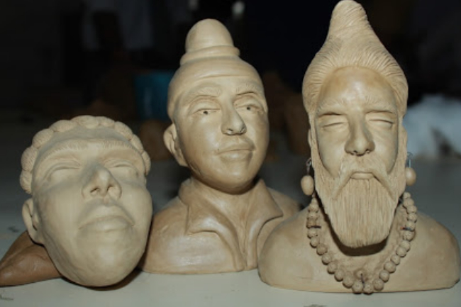
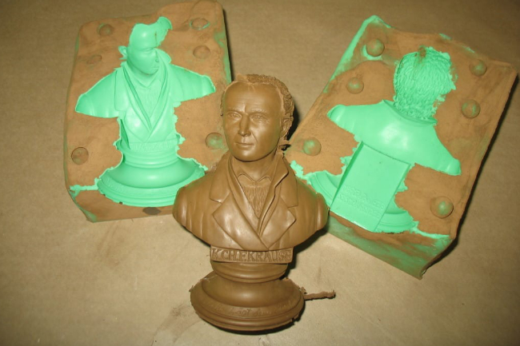
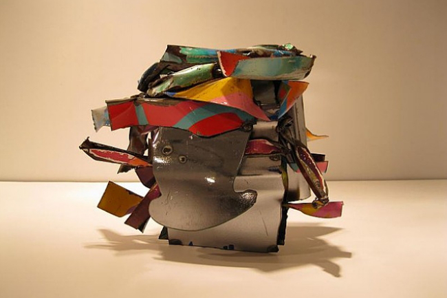

Sculpture
What is Sculpture?
Sculpting is an artistic form in which hard or plastic materials are worked into three-dimensional art objects. The designs may be embodied in freestanding objects, in reliefs on surfaces, or in environments ranging from tableaux to contexts that envelop the spectator. An enormous variety of media may be used, including clay, wax, stone, metal, fabric, glass, wood, plaster, rubber, and random "found" objects. Materials may be carved, modeled, molded, cast, wrought, welded, sewn, assembled, or otherwise shaped and combined.
It is the branch of the visual arts that operates in three dimensions. It is one of the plastic arts. Durable sculptural processes originally used carving and modelling, in stone, metal, ceramics, wood and other materials but, since Modernism, there has been an almost complete freedom of materials and process.
What about the history of Sculpture?
Three-dimensional art begun on prehistoric era. The most known works dating back to the Stone Age or 230,000 BCE are The Venus of Berekhat Ram and The Venus of Tan-Tan. Later on, sculpting became a big part of ancient civilizations.
{kind=link}
{kind=link}
Sculpture begun in Europe, the earliest works belonging to the Aurignacian culture. Though at the beginning of Mesolithic period, Europe figuratively reduced. After Egyptian Sculpture, the principal Golden Ages in the evolution of sculpture have been: (1) Classical Antiquity (500-27 BCE); (2) The Gothic Era (c.1150-1300); (3) The Italian Renaissance (c.1400-1600); and (4) Baroque Sculpture (1600-1700).
Of course there are various methods and techniques when it comes to painting. Each sculptor uses a teachnique they're most trained and used with to create their pieces. The list below are common methods and techniques that are commonly used.
- Carving
- - this is a commonly used technique. Whatever material is utilized, the fundamental highlights of the immediate technique for cutting are the equivalent; the stone worker begins with a strong mass of material and diminishes it deliberately to the ideal structure.
- Modeling
- - Modeling is working of plastic materials by hand to develop structure. Earth and wax are the most widely recognized displaying materials, and the craftsman's hands are the principle apparatuses, however metal and wood actualizes are regularly utilized in molding. Demonstrating is an old procedure, as shown by ancient mud dolls from Egypt and the Middle East.
- Casting
- - sculpting figures that are projected are produced using a material that is dissolved down (typically a metal) that is then filled a form. The form is permitted to cool, along these lines solidifying the metal, typically bronze.
- Assembling
- - Artists accumulate and join various materials to make a collected model. Gathering is an added substance measure.
 





A lot of model is intended to be set in broad daylight squares, nurseries, parks, and comparable open spots or in inside positions where it is disengaged in space and can be seen from all headings. Other figure is cut in help and is seen distinctly from the front and sides.
- Sculpture in the round
- - is a piece of workmanship you make that is three dimensional, or 3D. That implies you can see it from all sides, and you can walk right around it. On the off chance that you consider an artistic creation holding tight a divider, at that point you realize you can just see the front. The rear of it is normally against a divider or stand.
- Relief sculpture
- - a combination of 3-dimensional scluptural art and 2-dimensional pictorial arts. The sculpture is dependent on a supporting surface but the sculpture is extended in a plane. Uusally, the sculpture is arised from the supporting surfaces but there is also low relief, where the sculpture is sinked within the supporting surface.
- Modern forms of sculpture
- - this begun on the works of Auguste Rodin. These are sculptures that placed emphasis on design, form, and volume over the representation of a specific subject.
- Representational sculpture
- - as the name suggests, representational sculptures are sculptures made to look or be recognizeable for what they are supposed to be, for an example, an apple. However, they need not to be true to life.
- Nonrepresentational sculpture
- - nonrepresentational sculpture can be summarized in two words; abstract art. There are two main types of nonrepresentational sculpture: Abstract sculpture (uses nature only as a source of formal ides), and Nonobjective sculpture (completely nonrepresentational form; arises from the constructive manipulation of the sculptor's ideas).
- Symbolism
- - Sculptural pictures might be emblematic on various levels. Aside from regular images, for example, those of heraldry and other emblem, the least difficult and most clear sort of sculptural image is that where a theoretical thought is addressed by methods for moral story and representation.